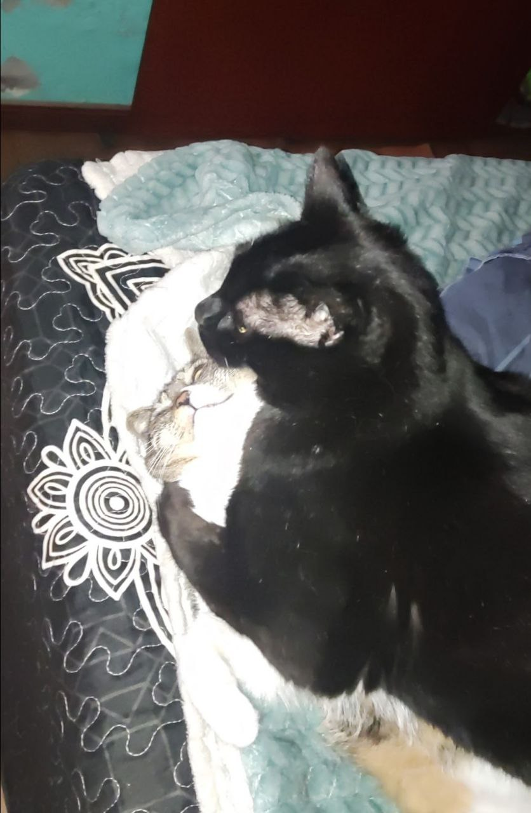
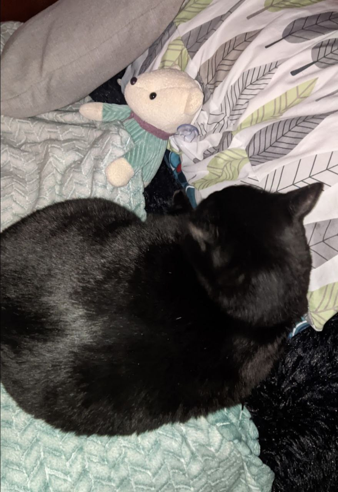

Romeo, mi querido gatito, ha sido una presencia constante y especial en mi vida desde que era muy pequeño. Es mucho más que una mascota; es un compañero fiel que siempre ha estado a mi lado en los momentos felices y en los más desafiantes. Su ternura, su mirada curiosa y su manera de hacerme sentir acompañado hacen que lo ame y adore profundamente. Romeo es, sin duda, una parte esencial de mi día a día y de mi historia personal.
Lo que más adoro de Romeo es cómo logra transformar cualquier día común en algo especial. Su forma de mirarme con esos ojos curiosos, su ronroneo suave que transmite calma, y esos momentos en los que simplemente se acurruca a mi lado como si entendiera exactamente lo que necesito. Es increíble cómo un ser tan pequeño puede tener un impacto tan grande en mi vida. Romeo ha sido mi compañero incondicional, tanto en los momentos más felices como en los más difíciles. Siempre está ahí, ofreciendo su compañía silenciosa pero significativa, recordándome que no importa cuán complicado parezca todo, siempre hay una razón para sonreír. Amo y adoro a Romeo por todo lo que es y representa para mí. Su fidelidad, su ternura y su simple existencia hacen que mi vida sea más completa. Para mí, él es más que un gatito; es un amigo, una parte de mi familia y una fuente constante de amor y alegría.
 Fotos de romeo con su peluche y su compañera pelusa
Pincha aquí para ir a mi biografia